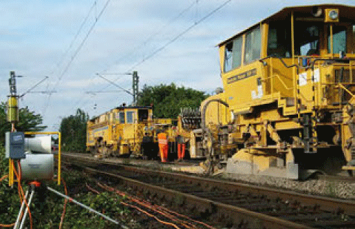
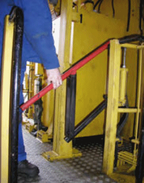
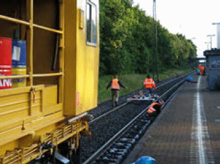
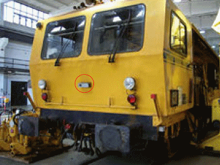
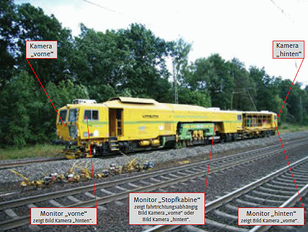
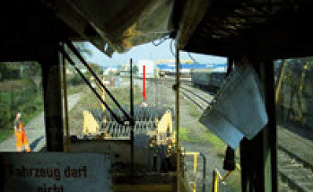
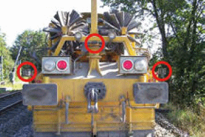
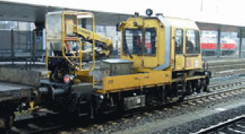
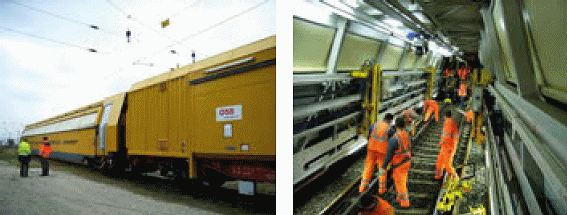

Das Personal von Stopfmaschinen, Schotterplaniermaschinen (SSP), Abb. 9-1, und Schienenschleifzügen, die nicht innerhalb einer z. B. durch Warnanlagen gesicherten Gleisbaustelle eingesetzt werden, kann gegenüber den Zugfahrten im Nachbargleis durch Absperrposten gesichert werden, wenn der Gleisbereich des Nachbargleises nicht betreten werden muss. Beschäftigte, die die Maschine z. B. für Messarbeiten verlassen müssen, haben sich beim Absperrposten zu melden und werden dann von diesem im Arbeitsgleis vor oder hinter der Maschine begleitet. Ein Absperrposten darf bis zu maximal drei Beschäftigte sichern (DB), wenn diese in einer Gruppe zusammenbleiben, sodass der Absperrposten auf alle drei unmittelbar Zugriff hat [16]. Bleibt die Gruppe nicht zusammen, sind mehrere Absperrposten erforderlich.
Der Einsatz von mitfahrenden Sicherungsposten ist bei den genannten Maschinen tagsüber schlecht möglich (durch die Arbeitsbewegung der Maschine ändert sich laufend die Sichtweite) und nachts nicht durchführbar wegen der Möglichkeit einer Fahrt mit vollständig erloschenem Nachtzeichen des Spitzensignals. Auch eine konventionelle Postenkette auf der Feldseite des Nachbargleises ist bei den genannten Maschinen nachts nicht umsetzbar, da die Außenposten am Beginn der Annäherungsstrecke stehen müssten.
Die Maschine darf nur zur Feldseite, also zur gleisfreien Seite hin, verlassen werden. Ausgänge zum Betriebsgleis hin sind zu verschließen bzw. zu verriegeln, um das unbeabsichtigte Verlassen der Maschine zu dieser Seite zu vermeiden. Dabei sind feste klappbare Verriegelungen einzusetzen, die in der Grundstellung geschlossen sind, Abb. 9-2. Aushängbare Ketten sind dafür ungeeignet.
Vor jedem Zugang zur Betriebsgleisseite, z. B.
muss das Nachbargleis für Fahrten gesperrt werden, wenn keine anderen Sicherungsmaßnahmen durchgeführt sind. Die Sperrung wird vom Beauftragten des Bahnbetreibers (DB: Technisch Berechtigter gemäß Betra Abschnitt 4.2) über den zuständigen Fahrdienstleiter veranlasst. Der Technisch Berechtigte fährt im Regelfall auf der Maschine mit.
Beim Stopfen von Weichenverbindungen ist die Sperrung des benachbarten Gleises erforderlich, da verschiedene Tätigkeiten im Gleisbereich des benachbarten Gleises notwendig sind, z. B.:

| Abb. 9-1: | Stopfmaschine (im Hintergrund, mit Messtrupp) und Schotterplaniermaschine. |

| Abb. 9-2: | Klappbare feste Verriegelung an einer Stopfmaschine, um unbeabsichtigtes Verlassen der Maschine zum Betriebsgleis auszuschließen. |
Wenn Stopfmaschinen und Schotterplaniermaschinen innerhalb einer Baustelle eingesetzt werden, die mit automatischen Warnsystemen gesichert wird, müssen die Warnsignale trotz der hohen Störschallpegel (vgl. Anhang 6) auch für Beschäftigte im Umfeld der Maschinen wahrnehmbar sein. Die vom Maschinenbetreiber anzugebenden Störschallpegel müssen bei der akustischen Projektierung des ortsfesten automatischen Warnsystems berücksichtigt werden, ggf. sind mobile Signalgeber auf die Maschinen zu setzen oder von Hand mitgetragene Starktonhörner zu verwenden.
Bei Arbeiten neben nicht gesperrten Nachbargleisen muss für seitlich ausschwenkende kraftbetriebene Arbeitseinrichtungen (z. B. Hebezeug der Schotterplaniermaschine zum Besenwechsel, Abb. 9-6, z. B. Anbaukran am Gleisarbeitsfahrzeug, Abb. 9-7) die Ausschwenkbegrenzung auf den erforderlichen Wert eingestellt und in Betrieb genommen sein.
Unter eingeschalteter Fahrleitung dürfen nur die dafür zugelassenen Arbeitsebenen der Maschine betreten werden. Bei jedem Standort auf der Maschine/auf Eisenbahnfahrzeugen muss der Schutzabstand zur unter Spannung stehenden Fahrleitung von mindestens 1,5 m sicher eingehalten werden, wenn oberhalb des Standortes kein Schutzdach vorhanden ist (Abb. 8-10: zulässige Standhöhe max. 1,45 m über SO bei Fahrleitung in 4,95 m Höhe über SO), Aufbauten dürfen keinesfalls bestiegen werden. Wenn ausnahmsweise Arbeiten an höherliegenden Stellen der Maschine erforderlich sind (z. B. Reinigungsarbeiten an Fenstern), darf dies nur auf Gleisen mit ausgeschalteter und bahngeerdeter oder bei nicht vorhandener Fahrleitung erfolgen. Für angebaute Hebegeräte (Einsatz eines Hebezeuges für den Besenwechsel an der SSP oder bei einem Gleisarbeitsfahrzeug, Abb. 9-7) muss der Schutzabstand zur Fahrleitung eingestellt sein: 0,3 m Schutzabstand + mind. 0,3 m Zuschlag für unbeabsichtigte Bewegungen, vgl. Kap. 4.
Bei der DB sind bei Einsatz von Baumaschinen unter der Oberleitung mit 15 kV die Sicherheitsmaßnahmen nach Ril 824.0106 [29] zwingend einzuhalten.
Bei Stopfmaschinen und Schotterplaniermaschinen besteht die Gefahr, dass Personen überfahren werden, die sich im Arbeitsgleis vor oder hinter der Maschine aufhalten. Stopfmaschinen (SM) und Schotterplaniermaschinen (SSP) müssen als „Schienenfahrzeug“ hinsichtlich des Sichtfeldes auf den Fahrweg bei Überführungsfahrten vom Führerstand (bei SSP auch kombiniert mit mittig angeordneter Bedienkabine) aus die Anforderungen der DB – Nebenfahrzeugrichtlinie 931.0002 [32], Abschnitt 4 „Fahrzeugaufbau“, Punkt (10) erfüllen:
„Aus der Sitzposition des Nebenfahrzeugführers und der zweiten Person müssen sichtbar sein
Sichtfeldanforderungen für den Gleisabschnitt hinter der Maschine werden in [32]
nicht gestellt. SM und SSP sind mobile selbstfahrende Arbeitsmittel im Sinne der
Betriebssicherheitsverordnung [2]. Diese fordert – auch für Bestandsmaschinen –
gemäß Anhang 1, 3.1.6 d):
„Reicht die direkte Sicht des Fahrers nicht aus, um die Sicherheit zu gewährleisten,
sind geeignete Hilfsvorrichtungen zur Verbesserung der Sicht anzubringen.“
Diese Forderung ist bei Stopfmaschinen nicht eingehalten, wenn die Maschinenbewegung von einem Bedienplatz ohne Sicht auf den Fahrweg eingeleitet wird, d. h. wenn die Arbeits-Fahrbewegung von der Stopfkabine gesteuert wird oder vom nicht in Fahrtrichtung vorn liegenden Stirnführerstand.
Bei Schotterplaniermaschinen kann die Forderung aus [2] für den Nahbereich vor und hinter der Maschine konstruktionsbedingt nicht eingehalten werden, wenn die Maschine nicht mit technischen Hilfsvorrichtungen ausgerüstet ist.
Versetzbewegungen von Stopfmaschinen sind auch im Baugleis grundsätzlich vom Stirnführerstand aus durchzuführen, der direkte Sicht auf den Fahrweg bietet. Dennoch ist immer wieder zu beobachten, dass Stopfmaschinen im Baugleis ohne direkte Sicht auf den Fahrweg versetzt werden, Abb. 9-3. Dann besteht Gefahr für Arbeitskräfte, die sich im Baugleis aufhalten. Wenn die Arbeitsfahrt von der Stopfkabine aus gesteuert wird, besteht keine Sicht auf den Gleisabschnitt vor der Maschine. Dann muss die Sicht durch ein Kamera – Monitor – System hergestellt werden, Abb. 9-4 [36].

| Abb. 9-3: | Versetzbewegung einer Stopfmaschine im Baugleis nach rückwärts. Der in Bewegungsrichtung vordere Führerstand ist hier nicht besetzt. |
Bei Schotterplaniermaschinen muss eine Überwachung des Nahbereichs vor und hinter der Maschine möglich sein, Abb. 9-1, 9-5, 9-6 [36]. Die Sicht ist hier je nach Maschinentyp durch die Maschinenaufbauten, durch die Anordnung der Austauschbesen und durch die Staubentwicklung stark eingeschränkt. Der Maschinenführer muss während der Arbeitsfahrt auch die seitlichen Pflugscharen beobachten. Zur Überwachung des Gefahrbereichs vor und hinter der Maschine haben sich kombinierte Systeme mit den Komponenten Kamera/Monitor und Ultraschall bewährt. Aktuell werden Ultraschallsysteme eingesetzt, die bei Erfassung einer Person im Nahbereich dem Bediener ein Warnsignal geben bzw. auch die Maschine automatisch anhalten, Abb. 9-6.

| Abb. 9-4 : | Ausrüstung einer Stopfmaschine mit Kamera- Monitor-Systemen |


| Abb. 9-5: | Sichteinschränkung im rückwärtigen Bereich einer Schotterplaniermaschine. Die gerade erkennbare Person in gebückter Haltung befindet sich 15 m vor der Pufferbohle. Person gebückt im Gleis - 15 m hinter der Maschine (SSP 110 SW) |

| Abb. 9-6: | Ultraschallsensoren an einer Schotterplaniermaschine: die Sensoren geben dem Bediener ein akustisches Signal bzw. stoppen die Maschine, sobald eine Person den Nahbereich vor der Maschine betritt. |

| Abb. 9-7: | Gleisarbeitsfahrzeug: unter eingeschalteter Oberleitung dürfen Aufbauten auf der Ladefläche nicht bestiegen werden, neben Betriebsgleisen darf der Anbaukran nur mit Ausschwenkbegrenzung betrieben werden. |
Eine mobile Instandhaltungseinheit (MIE) bietet höchste Sicherheit gegenüber den Zugfahrten im Nachbargleis, wenn alle Arbeitsschritte innerhalb des Fahrzeugs ausgeführt werden, Abb. 9-8. Sicherungsmaßnahmen für Zugfahrten im Nachbargleis und eine Geschwindigkeitsreduzierung im Nachbargleis sind i. d. R. nicht notwendig. Die MIE ist z. B. geeignet für: Passschienenwechsel, Kleineisenbehandlung, Zwischenlagenwechsel. Die Beschäftigten sind vor den Windkräften aus den Fahrten im Nachbargleis und vor Witterungseinflüssen geschützt. Von Hand zu bedienende Maschinen sind elektrisch angetrieben und am Fahrzeugrahmen angeschlossen. Dadurch entfallen die Emissionen von Gefahrstoffen, die Lärmbelastung ist wesentlich reduziert und das Heben schwerer handgeführter Maschinen entfällt. Die MIE trägt damit wesentlich zu ergonomischen Arbeitsbedingungen und zum Gesundheitsschutz bei. Ein Sozialraum kann in das Fahrzeug integriert werden. Die Beschäftigten werden mit der MIE sicher und zeitsparend zur Arbeitsstelle gebracht und verlassen die Einheit während der Schicht nicht.

| Abb. 9-8: | Mobile Instandhaltungseinheit mit geschütztem Arbeitsraum (rechts) und integriertem Sozialraum (Hersteller: ROBEL Bahnbaumaschinen GmbH). |